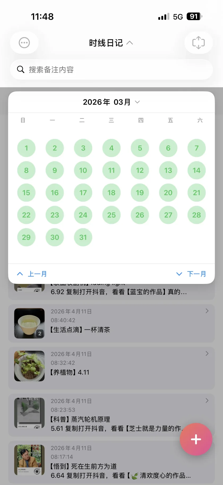
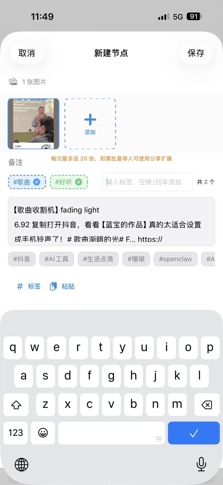
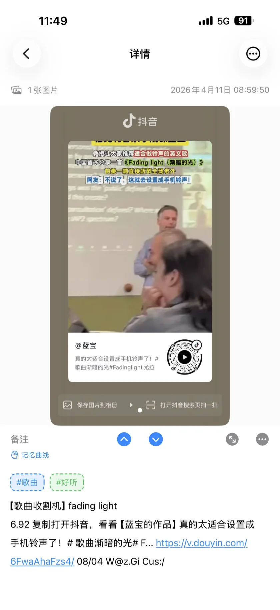
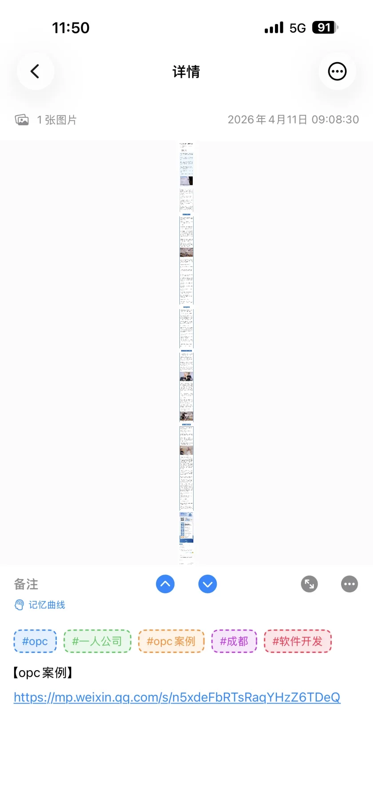
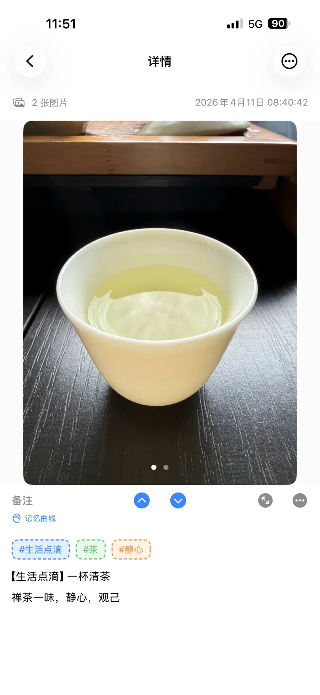
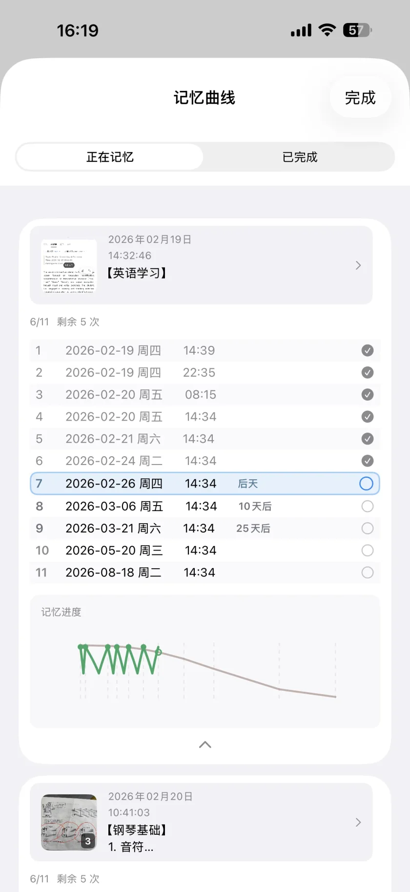

Мы живём в эпоху, когда мобильный интернет и рекомендательные алгоритмы глубоко встроены в жизнь, а всех увлекают тренды и короткие видео: ленты, «горячие» темы, ролики и длинные тексты бегут в одном потоке — нас приучают не останавливаться, и внимание становится самым дефицитным ресурсом. Обычные спасения — сила воли, тайм-менеджмент, цифровой детокс — часто сводятся к лобовой борьбе со средой. Это утомляет и часто не срабатывает: нельзя быть в напряжении круглосуточно.
Переформулируем вопрос: в потоке правда нет ничего, что стоит взять? Или там часто есть «питательная крупица», которую вы проскроллили? Разрыв не всегда в ценности контента, а в том, есть ли у вас свой небольшой процесс, чтобы чужой вывод превратить в то, что числится на вас и потом находится.
С коротким видео и длинными статьями я стал спокойнее: это больше похоже на ряды лотков на рынке или в книжной — не нужно забирать всё; можно идти с пустой миской и выбирать; когда цепляет, я кладу это на таймлайн в Snapline Diary, как убрать немного хорошего в свой шкаф.
За этим спокойствием — замена чистого наблюдения на готовку для себя: казанок похож на набор ингредиентов — съесть всё нельзя, но можно выбрать съедобное, помыть, нарезать, положить в свою миску — этот ряд ми — таймлайн по дням. Ниже — как выбирать и раскладывать, как помнить и находить; дальше — лёгкая обработка, шаблоны и кривая памяти.
Это не приложение «брось телефон» и не судья контента; это приложение для фото-текстового таймлайна на iOS (iPhone / iPad, данные по умолчанию на устройстве; также на Mac в режиме «Designed for iPad»). От первой идеи до прототипа, разработки, личного теста и итераций я был на передовой; большая часть мотивации — самому пользоваться каждый день. Чем дольше пользуюсь, тем яснее один смысл: смягчить «пустоту» после бесконечной ленты — в коротких окнах сделать маленькое, но оправданное дело: превратить то, что зацепило, в отслеживаемую запись.

В психологии обучения желательные трудности — это «чуть усилий — лучше запоминание»: в голову попадает то, что прошло вашу переработку — пересказ, переписывание, связи, сортировка — а не только глаза.
Формальное учение слишком тяжёлое для обрывков времени; ноль усилий превращается в «посмотрел = усвоил». Я держусь середины:
Snapline Diary собирает таймлайн, цветные теги, полнотекстовый поиск и повторы по кривой памяти в одну цепочку: захват → разбор → возврат → (по желанию) интервальные повторения.

Три реальных сценария — берите, что подходит.
Если лекция или туториал могут пригодиться позже:
#AI #startup для тематического повтора.Так «посмотрел» превращается в «отложил». Открыть тег — это тематическое чтение личной базы.

Длинные тексты редко читаются сразу. Привычка:
Та же логика, что у видео: сначала захват, потом обработка, потом поиск.

Помимо публичного, кладу больше фото семьи, путешествий, разговоров в одну запись, в заметках — то, что не выложишь: это личный архив, не выступление.
Это тоже против «пустоты после ленты»: плотность жизни не в ленте, а в том, что вы сами отметили.

Не каждой записи нужна максимальная интенсивность. Для того, что надо вспоминать или применять (экзамен, шаги, определения), добавляю запись в кривую памяти.
В текущей версии у кривой 11 фиксированных повторов, примерно на полгода после включения (последний около 180-го дня); в списке видно день, локальные уведомления напоминают. Если правила изменятся, ориентируйтесь на приложение и официальный сайт.
Так «запомнить» перестаёт быть удачей и следует научному графику.

С этим потоком я честнее отвечаю себе, зачем открываю телефон:
Каждый просмотр может что-то значить — не лозунг, а следы в телефоне: внимание хоть раз остановилось на важном — и это можно найти снова.
В эпоху фрагментации вернуть внимание — три шага:
В рассыпанной среде втягивайте внимание внутрь, фильтруйте, копите питание, которым реально пользуетесь, а не разбрасывайтесь после сеанса.
Пусть вас реже ловит «пусто после ленты», а остаётся больше ощутимой пользы.